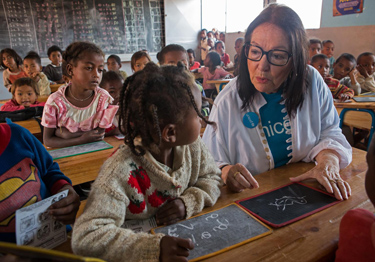
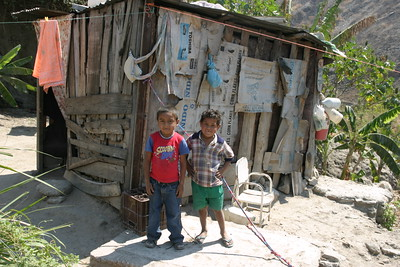

Already this year, we have organized over 32 fundraisers and raised over 232,000 dollars in donations to our cause. With the money we have raised and the help of our supporters, we have helped fund educational departments in 8 cities throughout Africa and South America. We have built 13 schools and provided up to date textbooks to 30 different schools. Our efforts allowed more than 10,000 people to get access to basic education who previously did not have it.
Our drive in June to fund an education program in Madagascar was a success. We raised over 11,000 dollars over the course of 4 weeks. The funds will be put into use in the coming months. Plans are being finalized for the development projects, and we are working hard to get things up and running as soon as possible.
We raised 7,000 dollars to buy medical supplies for a hospital in Honduras. This is atypical for our organization, but we found it was critical to get the most out our schools we set up there last year. There has been a lack in healthcare provided to the people we are trying to educate, and it was obvious we had to do something.
